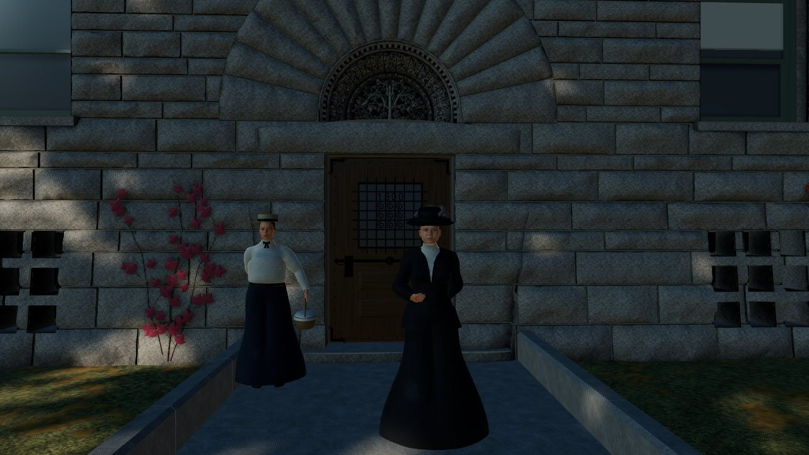
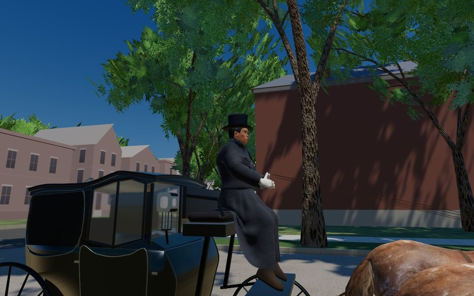
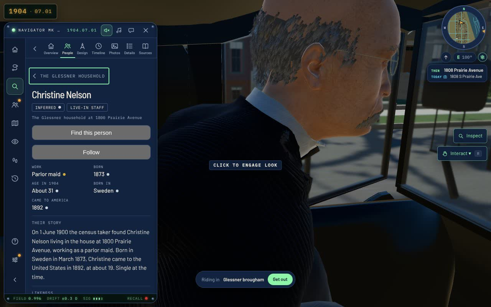

A town full of people with somewhere to be.
The people you meet in 4D Chicago are the people the sources name: soldiers and traders in 1812, the townspeople of 1835 from the census and the directories, the families and staff of Prairie Avenue in 1904. Each has a face, a home, a job and a day.

1904 · at the doorEveryone has a day.
In 1835 the whole town comes and goes: out of the house in the morning, along the street to the store, the forge or the wharf, and home again. In 1904 the doors of Prairie Avenue open and shut, staff use the service doors, and coachmen wait with their teams. People walk round you, and you can't walk through them.
- GreetStop anyone: they turn to you, and their card says who they are
- Tell me a storyAsk anyone for a story, their own first, then the town's
- KnockAsk at a door for someone by name, and they come out to meet you
- FollowWalk with them; at a doorway you wait outside until they come out
- Go to workSend someone to their place of work, and find them there in working hours
- FindLook anyone up by name and go straight to them
 1812 · the march
1812 · the marchNo two alike.
Each person looks the same wherever you meet them, on a carriage box or at their own door, and neighbours don't look alike: age, build and complexion differ from one person to the next. The jaunt hosts speak in their own recorded voices. Clothes follow the year and the season: the ladies of Prairie Avenue in their own finery, the 1812 garrison in its regimentals, and each Native man and woman of 1812 dressed as their own.
- LikenessesWhere a photograph survives, the face is fitted to it
- ReconstructedWhere none does, the face is a stand-in, and the card says so
Click anyone. Read their record.
Every person opens a card with their name, household, work and the sources that put them there. Where a name or a history had to be reconstructed, as for many of the Potawatomi of 1812, the card says so and explains how.

1904 · coachman
1904 · a person's cardGo and meet them. Choose a year.
Runs in your browser on a computer, a phone or a VR headset. Sign in once and every year is open.